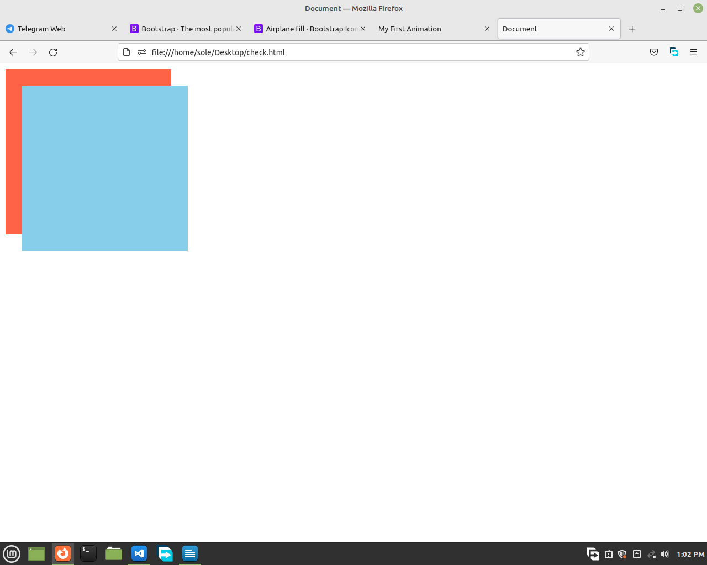
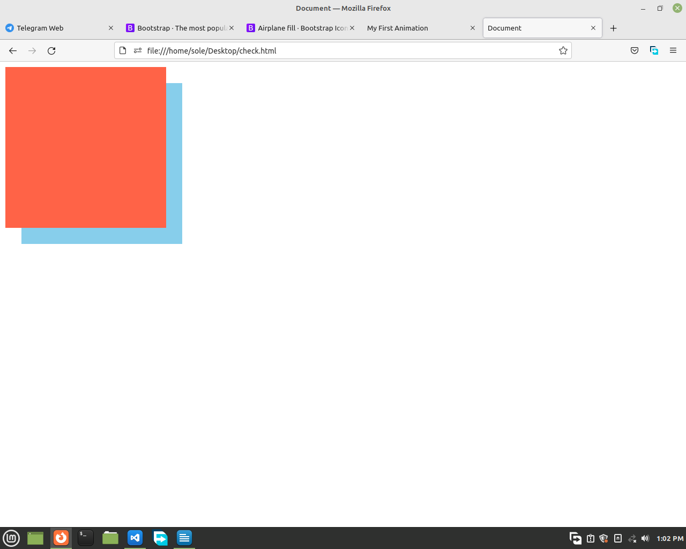

üòâ When you see
:nth-child() in the code below, don't worry about it, you will learn it on the next lesson.
If your elements stacked up on each other and you want to make someone the first then the other the second, you use z-index.
For example:
<html>
<head>
<style>
.thing {
position: absolute;
width:
300px;
height: 300px;
}
.thing:nth-child(1) {
top: 10px;
left:
10px;
background-color: tomato;
}
.thing:nth-child(2) {
top: 40px;
left:
40px;
background-color: skyblue;
}
</style>
</head>
<body>
<div class="thing"></div>
<div class="thing"></div>
</body>
</html>
Now the 2nd child in in front of the 1st child.

But now, if you want your 1st child to be in front and second child to be behind, you will use z-index.
.thing:nth-child(1) {
top: 10px;
left: 10px;
background-color: tomato;
z-index: 2;
}
.thing:nth-child(2) {
top: 10px;
left: 10px;
background-color: tomato;
z-index: 1;
}

⭐ The more you increase the value of z-index, the element comes forward.
The
default z-index value of every element is 0. This means, when any element is created, it's z-index is zero unless you change it.
⭐ If you want your element to be back of everything, set the z-index value to -1.